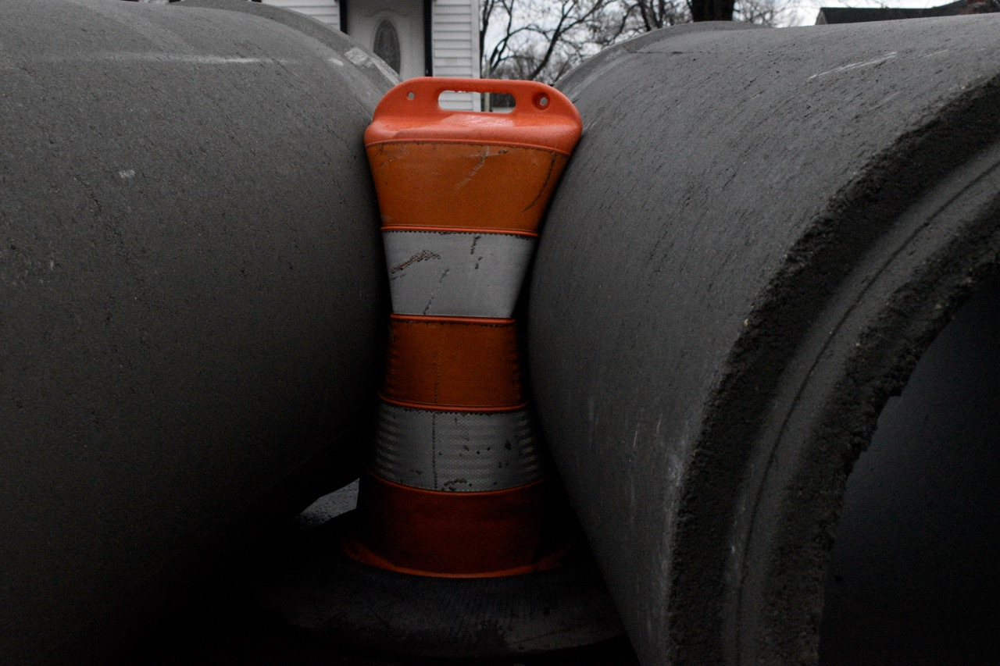
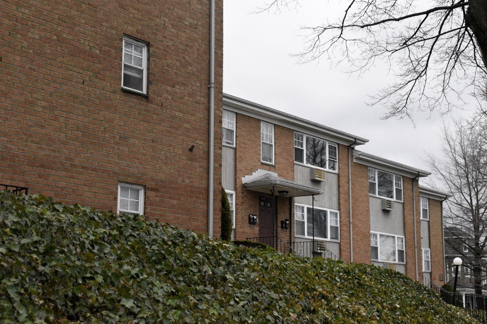
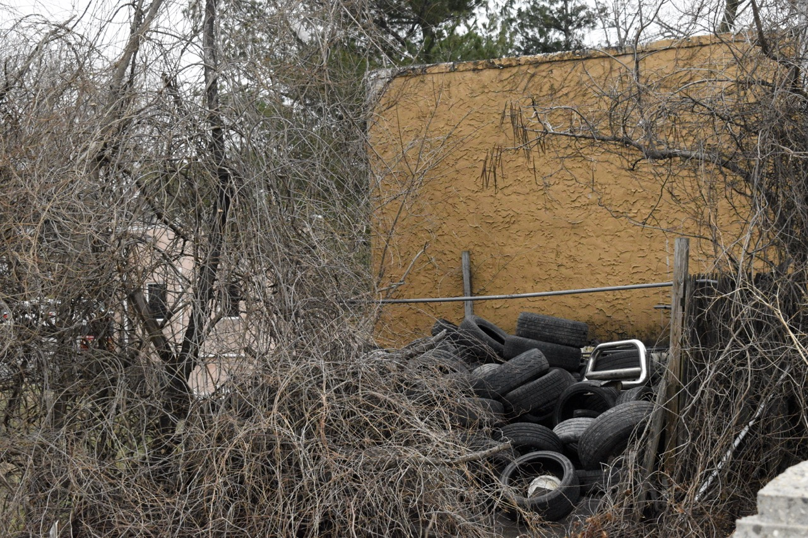

Project 01
Portrait
Brief
Conduct a photo shoot of a single subject — 35 exposures, as varied as possible. A portrait is as much about your work behind the camera as your subject's presence in front of it.
What to Vary
- Framing of the environment
- Distance and perspective
- Light quality and direction
- Point of view and scale
- Focus — sharp vs. shallow depth
Submission
- 35 raw images in a zip file
- Explore your subject actively
- Camera work matters as much as posing
Student Submissions
Portrait
Mari Ahmed
Portrait
Gianna D'Alessandro
Portrait
Rose Cruz Perez
Project 02
Still Life
Brief
Shoot 35 frames for a still life, using objects, light, composition, and framing to create meaning. The arrangement, the light hierarchy, and your position as viewer all shape the image's associations.
Consider
- The meaning of objects — metaphorical associations
- Light — creating visual hierarchy
- Composition — arrangement and proximity
- Framing — your position as viewer
- Variation across all four dimensions
Submission
- 35 raw images in a zip file
Student Submissions
Still Life
Chez Amos
Still Life
Jivon Batres
Still Life
Rose Cruz Perez
Still Life
Valeria Zamora Collazo
Project 03
Truth and Landscape
Brief
Explore the relationship between nature and culture through landscape photography — drawing on Robert Adams' essay Truth and Landscape and the historical aesthetic categories of the Beautiful, the Picturesque, and the Sublime.
Three Aesthetic Categories
- The Beautiful — balance, severe order, power and eternity
- The Picturesque — variety, painterly composition, artful irregularity
- The Sublime — overwhelming power of nature, awe and insignificance
Or explore Adams' framework of Geography, Autobiography, and Metaphor.
Submission
- 100 shots — upload a screen grab of imported (unedited) images
- 3 final images (one per category)
- 300-word reflection on truth, landscape, and your compositions
Student Submissions
Truth and Landscape
Kevin Pena
Truth and Landscape
Kevin Pena
Truth and Landscape
Kevin Pena
Truth and Landscape
Bralen Jones